Architecture Overview for Developers
Agent-Driven Knowledge Graph Platform
Unstructured Data to Structured Knowledge Graphs
4-Layer Module Architecture

ontology*.py — ontology facade, context, serialization, artifacts, governancequery/ — intent, strategy, cypher builder, semantic agents, answer generationagent/ — factory, context, contractsindex/ — pipeline, linker, extraction enginestore/ — graph, vector, LLM adaptersrules.py — SHACL-like inference & validationclient.py — public SDK facadesession.py — context persistence & cachingagent_server.py — FastAPI transportserver_runtime.py — service compositionmemory_service.py — memory-first facadepolicy.py — authorizationagent_readiness.py — ready / degraded / blockedShims and aliases that delegate to seocho/* and runtime/*. Shrinking toward extraction-only concerns.
Separation of Concerns

Agent orchestration, routing policy, runtime authorization, quality gates, ADR governance, ontology vocabulary lifecycle
Data ingestion (CSV/JSON/API), LLM 3-pass extraction, SHACL-like rule inference, graph load & Cypher query on DozerDB
From Raw Data to Agent Answers

Ontology YAML/JSON-LD definitions are injected into LLM prompts as extraction context. Node types, relationship types, and property constraints guide the extraction.
LLM-based entity extraction followed by entity resolution. Embedding cosine similarity deduplicates entities across documents.
SHACL-like rule inference annotates entities with required, datatype, enum, and range constraints before graph load.
DatabaseManager creates databases in DozerDB, applies schema constraints, and loads MERGE operations via GraphLoader.
Dynamically provisions one agent per graph target. Each agent's query tool is closure-bound to its specific DB context.
Three modes available: Legacy Router, Parallel Debate, or Semantic Graph QA. Details in the next section.
Router / Debate / Semantic QA
POST /run_agent
Static 7-agent pipeline. Router delegates to exactly 1 specialist agent. Sequential hand-off chain.
POST /run_debate
All DB-bound agents execute concurrently via asyncio.gather(). Supervisor synthesizes from Shared Memory. Fault-isolated.
POST /run_agent_semantic
4-agent model with entity disambiguation. Fulltext lookup + semantic dedup before LPG/RDF routing.

DebateOrchestrator spawns one agent per graph target. All agents execute concurrently. Each stores its isolated conclusion in request-scoped SharedMemory.
Supervisor Agent aggregates all results. If any agent fails, Supervisor synthesizes from remaining successful answers. Runtime payload includes agent_statuses and degraded flag.

RDFAgentLPGAgententity_overridesSEOCHO does not treat ontology as an external reference. We inject ontology context directly into the extraction prompt so the model produces graph candidates against an explicit semantic contract.
Property graphs are flexible, operationally convenient, and well-suited for Cypher-driven retrieval and application queries.
RDF provides stronger semantic guarantees and a cleaner path for standardization, explicit vocabulary control, and reasoning-oriented workflows.
SEOCHO uses both. LPG handles flexible operational access; RDF carries semantic structure and reasoning hints. The Router Agent can select either path or combine both.
Analyzes the user query, determines the dominant intent, and selects the most appropriate graph-specialist path.
Route toward the simplest retrieval path first, typically the LPG-oriented agent with explicit entity resolution.
Escalate to reasoning-focused graph execution when the query needs chained relationships or broader synthesis.
Use hybrid paths, multiple agents, or fallback strategies when intent is uncertain or evidence conflicts across routes.
This decouples complexity, scales specialist behavior cleanly, and aligns execution with query intent rather than forcing one monolithic agent policy.
The evaluation set is organized around four query families that mirror real usage, not only synthetic benchmark prompts.
Single-entity or single-relation questions that should resolve with direct retrieval and minimal reasoning.
Questions that require traversing multiple relations or combining evidence across documents and graph neighborhoods.
High-precision questions where correctness matters more than fluency and unsupported answers should be avoided.
Queries where the system must disambiguate meaning, select a route carefully, or expose fallback behavior.

We capture extraction behavior, retrieval steps, routing decisions, and final answer synthesis rather than scoring only the final response.
JSONL remains the portable trace artifact. Opik is the preferred team backend when richer dashboards, spans, and experiments are needed.
Traces make it clear whether an error comes from extraction drift, retrieval misses, router misclassification, or answer synthesis.
Directional improvement in entity consistency and relationship stability because extraction is anchored to an explicit semantic frame.
Using LPG and RDF together preserves operational flexibility while keeping a path to stronger semantic correctness and standardization.
Intent-aware routing shows the most value on complex and ambiguous queries, where a single static retrieval path is usually too brittle.
Docker Compose & REST Surface

| Endpoint | Method | Description |
|---|---|---|
/run_agent | POST | Legacy router mode |
/run_debate | POST | Parallel debate mode |
/run_agent_semantic | POST | Semantic entity-resolution flow |
/platform/chat/send | POST | Interactive platform chat |
/platform/ingest/raw | POST | Runtime raw record ingestion |
/indexes/fulltext/ensure | POST | Ensure fulltext index for semantic routing |
/semantic/artifacts/drafts | POST | Save ontology/SHACL candidates as draft |
/semantic/artifacts | GET | List semantic artifacts |
/semantic/artifacts/{id}/approve | POST | Promote draft to approved |
/databases | GET | List registered databases |
/agents | GET | List active DB-bound agents |
/health/runtime | GET | Runtime API health |
/health/batch | GET | Batch pipeline health |
Architecture changes are not complete unless this path works end-to-end:
All runtime write/compute APIs must include workspace_id. Single-tenant MVP but wired for multi-tenant.
elementId() over deprecated id()Forbidden in request hot path. Only allowed in offline governance flows.
All Agent SDK execution routed through agents_runtime.py. Never call Runner.run directly in feature modules.
extraction/ is shrinking. runtime/ is the target deployment shell. See docs/RUNTIME_PACKAGE_MIGRATION.md.
JSONL as portable artifact. Opik as optional team exporter. Backend selectable via SEOCHO_TRACE_BACKEND env var.
Questions?